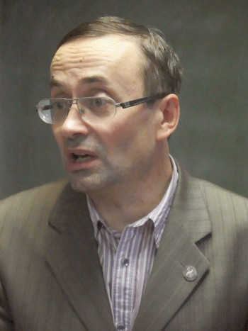

|
А. Золотов,
научный консультант Российского комитета рабочих,
доктор экономических наук, профессор
ГЛАВНОЕ ДЕЛО РОССИЙСКОГО КОМИТЕТА РАБОЧИХ
И ОШИБКИ ЕГО КРИТИКОВ

Замечательно, что газета «Трудовая Россия» в №20 поместила информацию об очередном заседании Российского комитета рабочих — постоянно действующего семинара по рабочему, профсоюзному движению Фонда Рабочей Академии и Федерации профсоюзов России. Тем более, что один из авторов сообщения — С.С. Маленцов — регулярно и активно участвуя в работе семинара, знает о его деятельности не понаслышке.
Такая публикация, безусловно, привлечет дополнительное внимание к Российскому комитету рабочих — органу, созданному в феврале 1994 года по инициативе ленинградской организации Российского профсоюза докеров и советов рабочих Ленинграда, Москвы и Нижнего Новгорода.
Если на протяжении почти 20 лет на заседания РКР раз в полгода приезжают представители профсоюзных и рабочих организаций для обмена опытом борьбы за свои интересы, значит, такой семинар, действительно, необходим. Да и где в России найдешь такое, что ведут мероприятие сопредседатели-рабочие, а для делегатов-рабочих предназначены первые ряды в аудитории. Много ли еще органов рабочего, профсоюзного движения, в которых решающий голос имеют именно делегаты-рабочие, хотя выступать могут также делегаты с правом совещательного голоса (включая и утвержденных Российским комитетом рабочих научных консультантов — докторов наук, профессоров, своей научной и общественно-политической деятельностью заслуживших доверие борющихся рабочих).
Авторы заметки в «Трудовой России» справедливо обращают особое внимание на выступление Р.С. Шарифуллиной по вопросу о сохранении и развитии здоровья трудящихся. Действительно, этот важный вопрос был поставлен на РКР впервые. Блестящий доклад Р.С. Шарифуллиной раскрыл для участников заседания новые грани интересов рабочего класса, которые необходимо учитывать в борьбе профсоюзных организаций.
С.С. Маленцов и О.Н. Соловьев, признавая «положительную роль организаторов РКР в деле пропаганды коллективных действий за лучшие условия труда и заработную плату», вместе с тем считают необходимым «остановиться на ряде выявленных разногласий». В числе разногласий, прежде всего, имеющийся, по их мнению, отказ РКР от политических лозунгов до завершения «экономической стадии классовой борьбы».
Постановка вопроса о разногласиях, как и последующее приглашение к полемике, заслуживают уважения, так как способствуют развитию классового самосознания рабочих. Поэтому выскажем свою позицию по ряду существенных вопросов, затронутых авторами заметки.
Бывает экономическая борьба под лозунгом «копейка на рубль», то есть за мелкие требования, не гарантирующие улучшения положения работников. Сегодня, например, подобным требованием является индексация заработной платы. Тот, кто ограничивается борьбой за индексацию, тот препятствует улучшению жизни работников, ибо инфляция всегда опережает индексацию, а торг с работодателем по поводу индексации приводит к тому, что она не обеспечивает возвращение реальной зарплаты даже к исходному уровню.
В повестку дня РКР на протяжении целого ряда лет включается вопрос «Обмен опытом борьбы за повышение заработной платы до уровня стоимости рабочей силы». Доведение заработной платы до стоимости рабочей силы — не то же самое, что «копейка на рубль». Если стоимость рабочей силы составляет сегодня 150 000–200 000 руб., а средняя зарплата меньше 30 000 руб. (при том, что у 2/3 российских работников зарплата ниже 20 000 руб.), то при доведении зарплаты до стоимости рабочей силы речь идет о «рубле на 10 копеек», и борьба за решение этой задачи имеет большое политическое значение
Пока эта задача не решается, большинство трудящихся остаются придавленными нуждой и склонны искать спасение не в коллективных действиях, а в сверхурочных, в «прихватывании» второй и третьей работы, в огородничестве и т.д., что подрывает способность рабочего класса осуществить свое историческое призвание.
Чтобы решить такую задачу в масштабах всей страны — а Российский комитет рабочих имеет в виду такие масштабы, — не обойтись одной забастовкой, на одном предприятии. Потребуются коллективные действия сотен тысяч и миллионов работников, организованных боевыми профсоюзами при активной роли партии рабочего класса в профсоюзном движении. Потребуется преодолеть бешеное сопротивление буржуазии и подконтрольного ей государства, которые так просто не позволят работникам вернуть 9/10 зарплаты, перекачиваемой сегодня в прибыль. Экономическое, на первый взгляд, требование становится политическим.
На Российском комитете рабочих представлен опыт пока немногих профсоюзных организаций (докеров, автомобилестроителей, авиадиспетчеров), который добились определенных успехов в решении этой грандиозной задачи. Но большое начинается с малого. РКР потому из раза в раз и включает этот вопрос в повестку дня, что рассчитывает на силу передового примера — главную силу в рабочем движении.
В России, кроме РКР, нет ни одного органа рабочего, профсоюзного движения, который уделял бы такое внимание задаче доведения зарплаты до уровня стоимости рабочей силы. Товарищи С.С. Маленцов и О.Н. Соловьев могли бы подчеркнуть ценную особенность Комитета рабочих: вести борьбу за экономические интересы работников, не скатываясь к «экономизму», столь распространенному в профсоюзном движении (и не только в нем), а подчиняя ее коренным интересам рабочего класса.
Сочиненное авторами заметки разграничение стадий классовой борьбы: сначала экономическая, затем политическая, — никогда не встречалось в выступлениях научных консультантов РКР.
В марксизме разграничивают формы классовой борьбы: теоретическую, идеологическую, экономическую, политическую. Эти формы реализуются одновременно, а не постадийно.
Авторы, призывая РКР не уклоняться от рабочей политики, ломятся в открытую дверь.
В последние годы, например, РКР регулярно ставит вопрос о законодательном сокращении рабочего дня и рабочей недели. Сокращение рабочего дня — непосредственно не является политическим лозунгом, но его законодательное осуществление требует борьбы не только с отдельным капиталистом, но и с классом капиталистов в целом, и потому борьба за него становится политической.
Сокращение рабочего дня — необходимое материальное условие создания органов власти рабочего класса, существующей сначала наряду с органами буржуазной власти, а затем ликвидирующей двоевластие и обеспечивающей политическое господство рабочего класса. После февральской революции 1917 г. на заводах и фабриках Петрограда рабочие организации ввели явочным порядком 8-часовой рабочий день. Располагая временем для политической деятельности, рабочие сохранили и упрочили Советы, а затем обеспечили переход к ним всей полноты власти.
Неужели и этот вопрос полемизирующие с РКР ограничивают рубрикой экономической борьбы?
Так что же они понимают под «рабочей политикой»? Может быть, призывы типа «Против буржуев!» (как озаглавлена заметка)?
Хотелось бы тогда узнать, сколько забастовок удалось организовать товарищам под этим лозунгом. Кстати, С.С. Маленцов, делясь опытом борьбы «Защиты» за интересы работников своего предприятия, ни разу не упомянул об его использовании.
Если РКР пока не ставит задач непосредственного осуществления Советской власти, то вовсе не потому, что не желает «отвлекать (пугать) рабочих политическими лозунгами». Никто в этом не заподозрит и С.С. Маленцова, выставлявшего экономические требования на конференции трудового коллектива.
Не играя в политику рабочего класса, а ведя ее всерьез, надо учитывать своевременность лозунгов. Летом 1917 года, при существовавших Советах, когда этого потребовала политическая обстановка, большевики временно сняли лозунг «Вся власть Советам!» — именно в интересах развития коммунистической революции.
Сегодня забастовки работников остаются единичными, а потому единичны забастовочные комитеты — прообразы основных звеньев Советской власти. Идея построения Советов через трудовые коллективы не только не овладела массами, но не усвоена большинством политических сторонников рабочего класса. Неужели в этих условиях Российский комитет рабочих должен рекомендовать рабочим, профсоюзным организациям установление Советской власти в качестве непосредственной задачи?
Похоже, товарищи-критики ошиблись адресом. От Российского комитета рабочих — органа, который обобщает имеющийся опыт коллективных действий и вырабатывающего рекомендации по его развитию, — они требуют упора на коммунистическую пропаганду.
Беру на себя смелость утверждать, никто в современной России не сделал больше для пропаганды Советской власти, коммунизма, чем научные консультанты РКР, профессора М.В. Попов и А.С. Казеннов. Но они потому и являются научными консультантами, что умеют различать задачи РКР как российского центра обобщения опыта борьбы рабочих организаций, опыта передового, но еще не поставившего в повестку дня осуществление коммунизма, и — Красного университета как центра коммунистической пропаганды в России.
Такая пропаганда ведется и на РКР, но не она является его главной задачей. На РКР представлены профсоюзы, то есть не союзы единомышленников, а союзы для борьбы за профессиональные интересы. И чем успешнее РКР решает свою главную задачу — обобщения и развития передового опыта коллективных действий работников за улучшение своего положения, постановки назревших задач рабочего движения — тем восприимчивее работники к коммунистическим идеям, пропагандируемым Красным университетом, рабочими газетами, включая «Трудовую Россию». Так помогайте РКР в его деле, а не мешайте бессодержательными разговорами о «рабочей политике».
Товарищи С.С. Маленцов и О.Н. Соловьев не найдут решений РКР в поддержку «тех капиталистов, которые намерены сохранять «отечественное» производство». Вот в поддержку отечественного производства Российский комитет рабочих выступал неоднократно, в том числе требуя введения уголовной ответственности для тех российских капиталистов, которые выводят средства за рубеж, а не используют их для повышения зарплаты работников и обновления основных производственных фондов.
Да, обоснованно считать отечественными бывшие советские заводы, которые планомерно создавались и действовали в рамках народного хозяйства, образуя экономический организм. Именно такие предприятия были тесно связаны с отечественной наукой, имели собственные мощные конструкторские бюро и инженерные центры и потому были способны обеспечивать экономическую самостоятельность страны, развитие экономики в интересах рабочего класса и его союзников.
Ради получения прибыли российские капиталисты вынуждены что-то делать для поддержания таких заводов, восстанавливать существовавшие хозяйственные связи, в том числе с предприятиями Белоруссии, Казахстана, Украины и т.д., сохраняя тем самым потенциал для возрождения единого экономического организма не только России, но и СССР.
А вот филиалы иностранных компаний, действующие на территории России, экономическое единство страны подрывают. Научные разработки, высокие технологии осуществляются за рубежом, предприятиям на территории России передаются самые простые функции, так что подобные научно-производственные циклы, в целом, остаются инородными для экономики нашей страны.
Сталкиваясь с более крупным иностранным капиталом, российский капитал отступает, либо закрывая отечественные предприятия, либо превращая их в филиалы иностранных монополий.
Не российских капиталистов поддерживали РКР и РКРП, выступая за сохранение ЗИЛа, «Электромаша». Они боролись за жизнь заводов, бывших флагманами производства СССР и способных стать ими снова — в интересах рабочего класса России. Или вы считаете это ошибкой?
Те, кто проповедуют якобы «рабочую политику», призывают к борьбе «в первую очередь против буржуазии отечественной».
Если вы имеете в виду борьбу за доведение заработной платы до уровня стоимости рабочей силы, за сокращение рабочего дня и рабочей недели, то подобная избирательность, по меньшей мере, странная. Отрадно, что боевые профсоюзные организаций филиалов иностранных компаний («Форда», «Фольксвагена», «Антолина») такие призывы игнорируют и действуют в соответствии с рекомендациями РКР.
Если подразумеваются политические демонстрации, митинги, шествия и т.д., то события, происходящие на Украине, наглядно показывают нынешний смысл борьбы «в первую очередь, против отечественной буржуазии». Что будет в случае победы подкармливаемых из-за рубежа политических противников украинского промышленного капитала? — Построенные в СССР заводы на Украине, тесно связанные с российскими, либо закроют, либо превратят в придатки западных монополий. По рабочему классу Украины и России будет нанесен страшный удар.
Не забудем, в России есть собственный политический «майдан» — «Болотная площадь».
Потакать представителям иностранного капитала, уничтожающего отечественное производство и насаждающего фашистскими методами марионеточные режимы — это, по-вашему, «рабочая политика»?
Вы заявляете, что без российской буржуазии «существование иностранной буржуазии в России будет невозможно». Это верно для победившего социализма. Но не выдавайте желаемое за действительное. До свершения коммунистической революции превращение российской буржуазии в прислугу западных монополий на территории России не только возможно, но и происходит на наших глазах. Если этот процесс завершится, рабочему классу, тогда уже преимущественно «отверточной» экономики, будет прямо противостоять западный капитал, куда более мощный, чем российский. Поощрять подобную трансформацию — это и есть политика, направленная «против произвола, угнетения, эксплуатации»?
В листовке «Альтернативы рабочему движению нет», помещенной в этом же номере «Трудовой России», снова обращение к октябрьскому заседанию РКР. В основном, листовка получилась полезной. Но и здесь после ремарки: «У рабочего движения множество врагов» — не обошлось без критики некоего стремления «ограничить цели борьбы зарплатой, убедив, что политические лозунги не ко времени».
Ясно, что РКР не ограничивает цели борьбы зарплатой и от политических лозунгов не отказывается. Его настоящее стремление состоит в том, чтобы, тщательно анализируя передовой опыт рабочего, профсоюзного движения, ставить назревшие задачи, предлагать научно выверенные рекомендации по их решению коллективными действиями работников в соответствии с коренными интересами рабочего класса, способствуя тем самым возрождению Советской власти.
А вам, уважаемые критики линии РКР, не помешала бы большевистская самокритика — чтобы не угодить надолго в упомянутое «множество».
НАЗАД
|